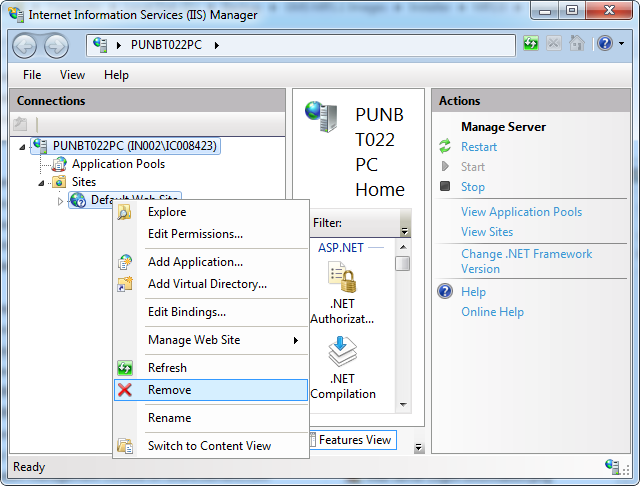

Remove the Default IIS Website in IIS Manager
When you install and configure IIS, a default website is created. It uses the default ports (HTTP and HTTPS).
NOTICE

Corruption of other Products
Do not delete the default website created by IIS if other products are installed on the same system where you have installed IIS.
This is because these products use the default website, such as VMS, and deleting the default IIS website may corrupt them.
You must create a new website on different port.
You cannot use the SMC to delete websites that are created by other applications. You must delete the third-party or default website using Microsoft Internet Information Services (IIS) Manager.
- To open IIS Manager, do one of the following:
- From the Windows Start menu, type inetmgr in the Search Programs and files field. Click ENTER.
- Select Control Panel > Administrative Tools > Internet Information Services (IIS) Manager.
- The IIS Manager window opens.
- Expand the Web Server computer node, and the Sites folder.
- Select the Default Website and right-click, and then select Remove.
- Click Yes.
- Close the IIS Manager window.
